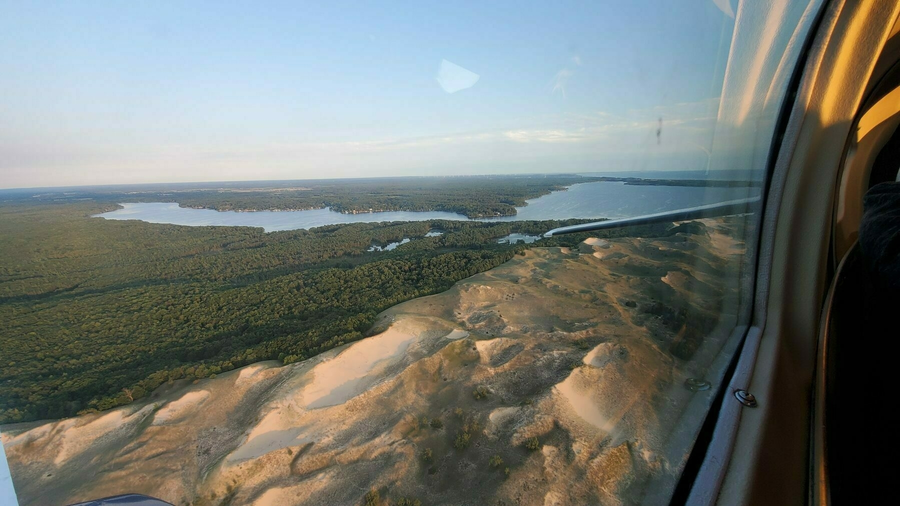

August is drawing to a close and though summer officially has a few more weeks, the change of seasons is beginning. Marching bands have all completed camp and opening football games are kicking off each weekend. This marks a good time to review the season.
Golf - The 2021 championship season has drawn to a close with no official tournament wins, but many smaller achievements. I finished 8th in the CFGC Club Championship. Won 2 closest-to-the-pin hole events during Men’s League and advanced to the first round of the playoffs. Lost our flight on the final putt of the final match in the LHGC Men’s Invitational. Best annual percentage of rounds <80 and new low H.I. (handicap index) of 5.5.
Travel - Enjoyed 2 trips to Michigan this summer to escape the oppresive heat and humidity. Check the picture taken from a 10-seat Cessna as I flew over Hamlin Lake and Ludington State Park on the way to Manistee. Enjoyed lake time, a Lake Michigan salmon fishing trip, and the chance to see the band Chicago live at Interlochen.
Work - Illuminate has continued to be an exciting place to work! The engineering team has stabilized and has been able to take on significant work that positions us well for the future, rather than just struggling to keep up. We’ve just signed a new deal and expectations are building that we could become very busy over the next few months.
Reading - I’ve begun re-reading Zero to One, a great book about startups, business, and building the future. I’ve also started reading Deep Work, which is so far filled with strategies directly appicable to the Software Engineering I do on a daily basis. Many of them have been natural habits for a long time. I also found a good deal on a sub. to the WSJ so I keep up on current events. Speaking of…
Current Events - it has long been my policy to not share my opinions on politics on the internet. I reserve the right to change my mind in the future and find that remaining a lurker online eases those transitions. So without opinions, here is a brief snapshot of what has been going on: The Delta variant surge of COVID has continued to gather headlines. The U.S. military has spent the last couple weeks rapidly removing forces from Afghanistan under Biden’s direction. The Taliban immediately gained control in their abscence and the whole process has been filled with chaos and tragically violence and loss of life. Inflation is continuing to report significantly higher than desired, due in large part to lasting upheaval in supply chains.
To end on a positive note, its football season again. The weather should be cooling off soon and there are plenty of interesting challenges at work to keep me busy.
Cheers to what’s to come!

Open-Source software has a huge impact in the industry and I, like many developers, view open-source contributions like a small badge of honor. As a young engineer, it can be a challenging and intimidating barrier to begin making meaningful open-source contributions. My own journey is off to a modest start. For a long time, I was only a lurker and only recently have I been able to begin contributing to the projects I’ve been using. A few months ago, I began to have enough familiarity in the Airflow project to warrant some interaction. I began by joining their Slack org and asking a few questions, as well as making some comments on existing Github issues. More recently, I did a similar thing with the Seldon project and after helping me solve an issue, their contributors asked if I’d help create a PR for their project. It was a simple change to their docs adding a hint about how to install behind a proxy. And just like that, my open-source contributing career seems to have officially left the starting gates. Seldon-Core Pull #3311
I’m a Software Engineer in the KC area, but from Michigan originally. I recently graduated from K-State with degrees in Computer Science and Mathematics and 4 years of memories playing trumpet in the KSUMB. Now that I’ve graduated, I’m playing golf as often as possible finding myself having conversations about things like 401(k)s with my friends and coworkers. So now we’re here. If I make a habit out of this, I’ll document my story as the chapters unfold.
Getting my website and micro blog set up. If you have found this page, welcome! I’m Brandon, a Software Engineer with a “127.0.0.1” near Kansas City. Hope to have a more complete intro post soon, and regular posts after that. Topics could include things about me, golf, tech, music / audio, or interesting reads and topics.
Hope you enjoy!